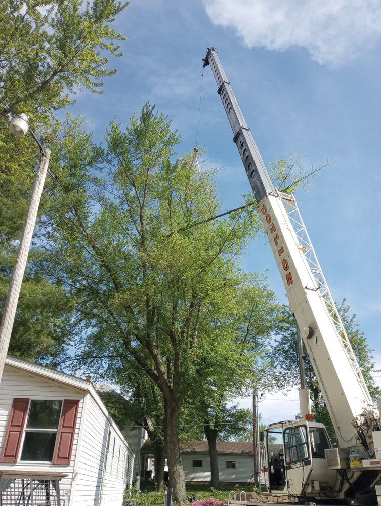

How Much Does Tree Removal Cost? A Homeowner's Honest Guide

One of the first things people ask when they call us is: "So what's this going to cost?" And honestly, it's one of the harder questions to answer before we've seen the tree. But I can give you a realistic ballpark and walk you through exactly what drives the price up or down — so you're not walking into this blind.
No fluff here. Just a straight breakdown from people who do this every day.
Size Is the Biggest Factor — But It's Not the Only One
The taller and bigger around a tree is, the more it generally costs to remove — that part's intuitive. Here's roughly how the size categories break down and what tends to drive each one:
- Small trees (under 25 feet): Young ornamentals, small ornamental maples, overgrown shrub trees — anything you could almost reach the top of from a ladder. These are usually the most straightforward jobs we do.
- Medium trees (25–50 feet): Your average backyard shade tree — a mid-size oak, dogwood, or mature pine. This is the most common size we see, and the job complexity really starts to depend on access at this point.
- Large trees (50–80 feet): Big hardwoods, mature pines, anything that takes a real crew and real equipment to bring down safely. These take longer and require more rigging and care.
- Very large trees (80+ feet): Towering cottonwoods, massive oaks, or anything where the canopy is hanging over your house, your neighbor's fence, and your driveway simultaneously. These are the most complex jobs we take on, and every one of them is different.
Size gives you a starting point for thinking about the job — but it's not the number. The actual quote depends on several other factors that can change things significantly, which is why we always look at the tree in person before naming a price.
What Actually Makes a Job Cost More
Access to the Tree
This one surprises a lot of homeowners. Can we get a chipper or crane truck close to the tree? Is it in a fenced backyard with a four-foot gate? Is it backed up against your fence line with no room to swing a saw? Tight access means more hand work, more rope rigging, and more time — which means more money. A tree sitting in an open front yard next to a wide driveway is a very different job than the same tree wedged between your house and your neighbor's garage.
Dead vs. Alive
People sometimes assume a dead tree is easier — it's "already gone," right? Not really. Dead trees are often harder and more dangerous to remove than living ones. Dead wood is unpredictable. Branches can snap without warning. The trunk can be hollow. The whole thing behaves differently on the way down. A large dead tree near a structure can actually cost more than a living tree of the same size, because of the extra care required to bring it down safely.
How Close It Is to Your House, Power Lines, or Other Structures
If a tree is standing in the middle of a wide open yard, we can drop it in sections and wrap up fast. If it's leaning toward your roof, fifteen feet from a power line, and directly above your AC unit — that's a completely different job. Working near structures means slower sectional removal, more rigging to control where each piece lands, and more cleanup time. All of that adds up.
Species and Wood Density
Hardwoods like oak, hickory, and walnut are denser than softwoods like pine or silver maple. More density means more time cutting, more equipment wear, and heavier loads to haul. For large trees, species can be a real factor in the final number.
What's Actually Included in the Quote
Always ask this before signing anything. Does the price include stump removal, or just cutting to ground level? Does it include hauling away all the wood and debris, or will there be a pile left in your yard? Some companies quote low and then charge separately for every add-on. A good company lays out exactly what's included upfront so there are no surprises on the invoice.
Why Two Quotes Can Be So Different
You call three companies about the exact same tree and get back three very different numbers. Here's what's driving that gap:
- Insurance costs money. A legitimate tree service carries general liability insurance and workers' comp. Uninsured crews can quote lower because they're cutting that cost — and if something goes wrong on your property, the liability can fall on you.
- Equipment costs money. A company with a modern chipper, a crane, and a full trained crew handles jobs safely and efficiently. A solo guy with a chainsaw and a pickup can quote half the price, but the job takes twice as long and carries twice the risk.
- Disposal isn't free. Getting rid of a full tree worth of wood and brush costs real money. A suspiciously low bid often means they're planning to leave the mess in your yard, or dump it somewhere they shouldn't.
- Experience has value. A crew that's been doing this for years knows how to handle tricky situations without destroying your lawn, your fence, or your neighbor's car. That expertise is worth paying for.
Red Flags to Watch For
Most bad experiences with tree companies start with the hiring decision. Here's what should make you pause:
- They won't show you proof of insurance when you ask
- They want a large cash deposit upfront before any work begins
- They give you a firm price without ever physically looking at the tree
- They show up with no marked trucks, no safety gear, and no written estimate
- They pressure you to sign the same day — especially after a storm
After bad weather, "storm chasers" roll through neighborhoods offering cheap, quick removals. A lot of them take a partial payment, do a halfway job, and move on. Stick with local companies that have real reviews and a real address.
When to Get Multiple Estimates
For any job that feels like a big undertaking — a large tree, a tricky location, anything near your house — it's worth calling two or three companies. Not to find the cheapest price, but to understand what you're paying for and confirm the company is legitimate. Ask each one the same questions: Are you licensed and insured? What exactly is included in this price? How long will the job take? How do you handle cleanup? A company that answers those questions confidently and in writing is one you can trust.
The goal isn't the lowest number. It's the right job, done safely, by people who stand behind their work.
Get an Honest, Written Estimate
We'll come out, look at the tree, and give you a straight number — no pressure, no hidden fees, no obligation. Free estimates always.